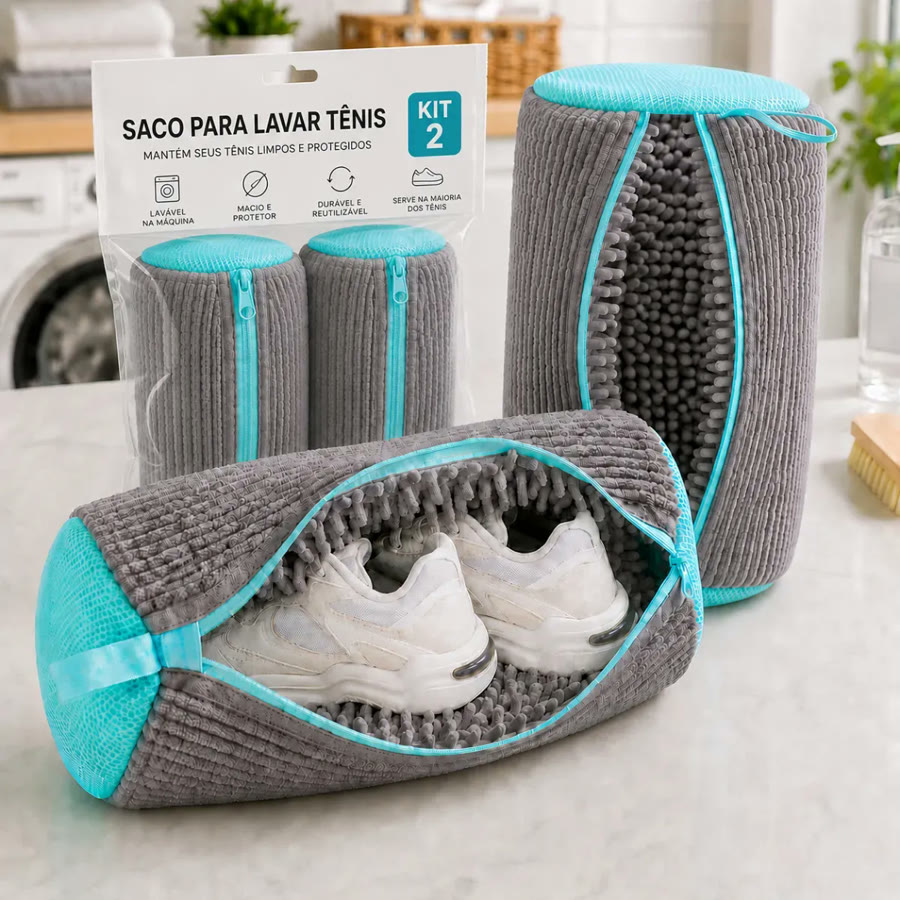
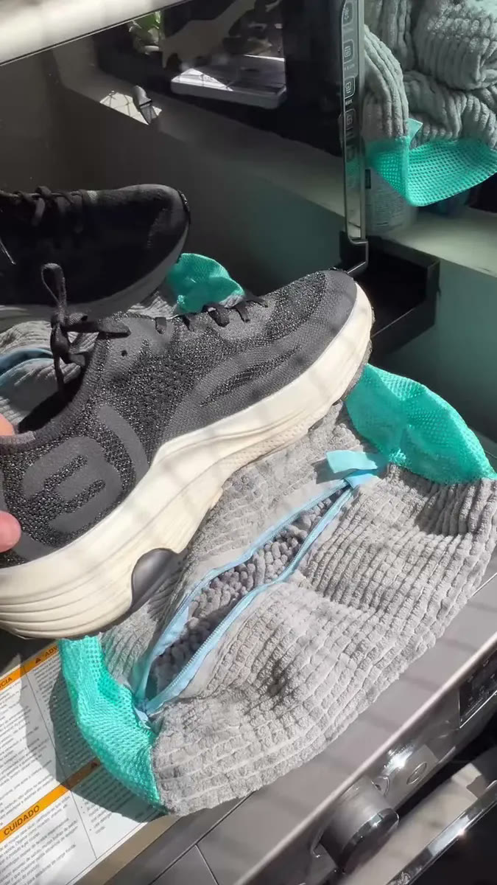
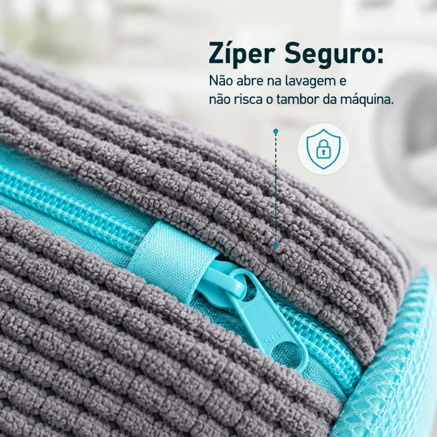
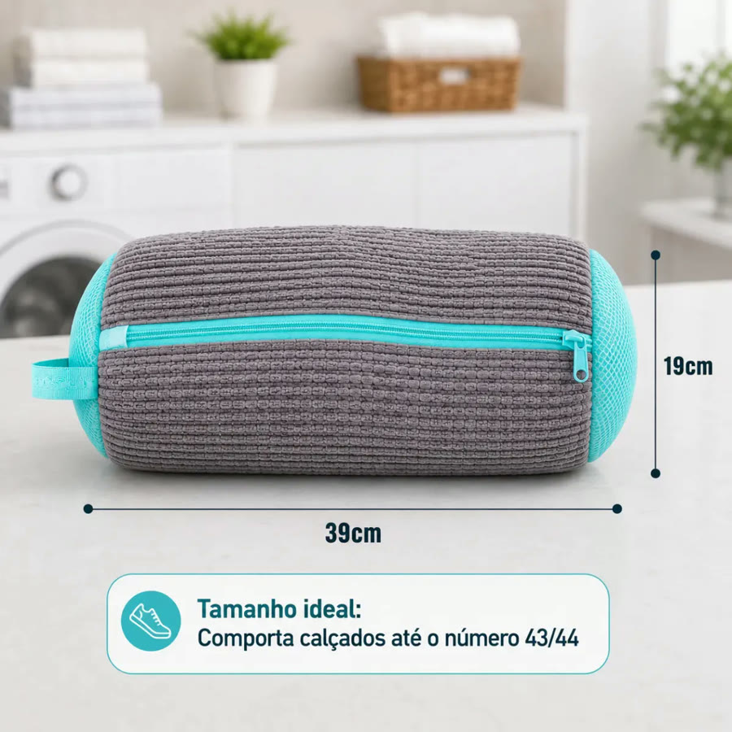
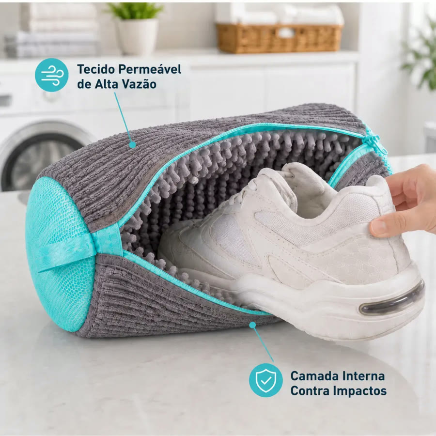

Achado nº 15
Kit com 2 sacos para lavar tênis na máquina





O que diz a página oficial do produto
- São dois sacos de poliéster, com fechamento em zíper, para lavar tênis e sapatos dentro da máquina de lavar
- Cada saco mede 39 cm de comprimento por 19 cm de largura
- Segundo o anúncio, a malha reforçada amortece o impacto do tênis contra o tambor e reduz o barulho
- Segundo o anúncio, o cursor do zíper fica escondido num protetor, para o saco não abrir durante a lavagem
- Segundo o anúncio, cabe calçado até o número 43/44
- Segundo o anúncio, serve para tênis, sapatilhas, chinelos e sapatos de tecido
- No Mercado Livre, tem nota 4,8 com mais de 2.600 avaliações e mais de 10 mil vendidos
Link de afiliado: se você comprar por ele, a Achadaria pode receber uma comissão, sem custo extra para você. Preço, estoque e entrega são da loja e podem mudar; confira lá antes de comprar.